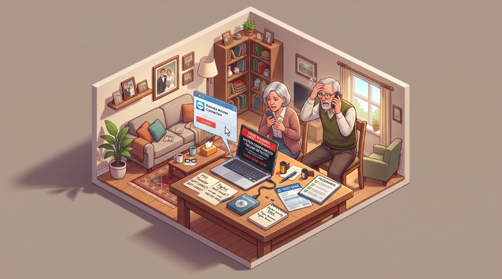
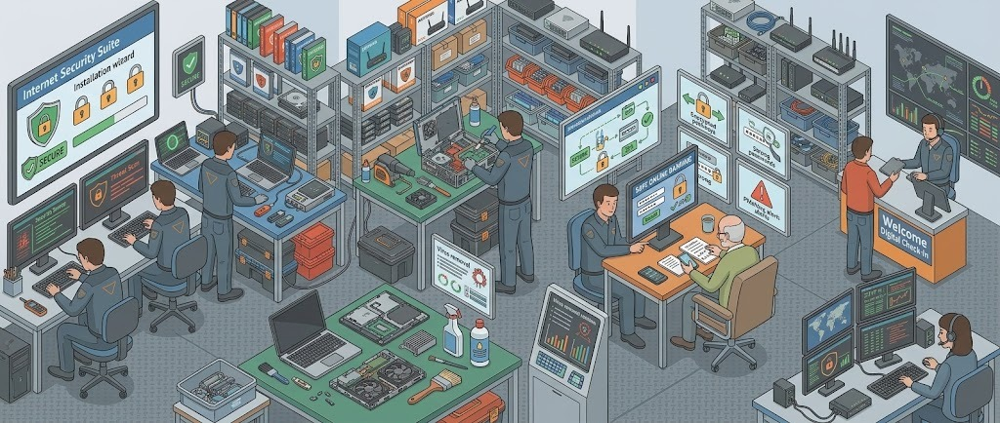
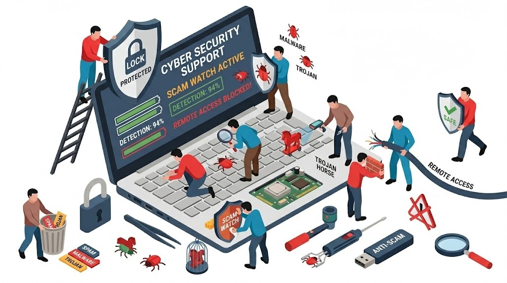

Did an unsolicited phone caller connect to your computer? Has your bank frozen your accounts following a suspected remote scam? We perform complete forensic tool evictions (AnyDesk, TeamViewer), eliminate hidden keyloggers and Trojan malware, and deliver the Official Signed Security Clearance Report mandated by Australian bank fraud investigators to unlock your funds.
If someone called you claiming to be from Telstra, NBN Co, Commonwealth Bank, Amazon, or Microsoft, and you permitted them to connect to your screen, take these 4 actions immediately:
Modern cyber syndicates targeting Brisbane and South East Queensland residents do not rely on brute-force hacking. They exploit trust, authority, and artificial urgency. Understanding their operational playbook is the key to complete digital recovery:

⚠️ Active Scam Incident DiagramThe phone rings with a local Queensland number (spoofed via VoIP). The caller speaks with polite, polished urgency, identifying themselves as an "NBN Network Security Specialist" or "Telstra Cyber Security Officer." They claim that foreign hackers in Eastern Europe or South America are currently tapping into your home IP address, or that someone has applied for a $5,000 personal loan under your name.
To "protect your accounts," they direct you to download a seemingly innocent remote desktop utility — most commonly AnyDesk, TeamViewer, UltraViewer, ScreenConnect, or RustDesk. Once you provide the 9-digit connection ID, the scammer's cursor takes control of your screen.
The scammer blanks your physical monitor or shows a fake "Updating Windows Security" screen while secretly opening secondary background sessions to browse your personal folders, tax records, and saved password files.
They ask you to log into NetBank to "verify transactions." Using browser developer tools, they edit the HTML displayed balance to make it look like they accidentally transferred $10,000 to you, demanding you wire the "excess" back immediately.
They strictly warn you: "Do not tell your local bank teller or family; our phone call is a confidential federal police sting operation." This psychological isolation prevents victims from seeking second opinions.
Before hanging up, they configure unattended passwords, install background service daemons, and set up reverse proxy tunnels so they can reconnect to your computer late at night while you sleep.
Re-installing Windows is not always necessary and causes unnecessary data loss. Our component-level digital forensic audit removes every trace of unauthorized access while preserving your precious files and software:

🛡️ Brisbane Cyber Security Workshop LabUnlike retail electronics stores that run a single automated retail scan and declare your machine clean, our certified technician conducts a multi-vector investigation adhering to Australian Signals Directorate (ASD) Essential Eight principles:
A true security service shouldn't just delete viruses; it should leave your computer running faster, cooler, and more responsive than the day you bought it. We combine digital cyber defense with deep physical hardware maintenance:

🧹 Dual-Action Forensic & Thermal OverhaulMalware and background remote access services consume substantial CPU cycles, causing cooling fans to roar and batteries to drain in under an hour. In Brisbane's humid subtropical climate, internal dust mats combine with moisture to form an insulating blanket that degrades electronic components:
We eliminate intrusive trialware, aggressive browser notification pushers, adware search redirects, startup telemetry hoggers, and unnecessary OEM background utilities that bog down boot times.
Removing gigabytes of obsolete crash dumps, Windows Update cache residue, broken installer temp files, and orphaned registry entries that slow down drive indexing and SSD seek performance.
We open the machine chassis, safely isolate the battery, and blow out accumulated dust mats from heatsink copper fins and high-RPM cooling fans using anti-static equipment without spinning fan blades.
We configure enterprise-grade endpoint security software with real-time heuristic file scanning, anti-ransomware rollback shields, and secure banking browser sandboxes.
When an Australian bank's automated fraud detection flags an unauthorized remote session or unusual wire transfer, they freeze NetBank access until you provide a certified technician's written clearance. Our reports are recognized across the country:
We do not believe in charging ticking-clock hourly rates while your financial security hangs in the balance. You approve the exact fixed price upfront:
| Service Description | Fixed Rate | Turnaround | Guarantee |
|---|---|---|---|
|
Remote Access Scam Purge & Official Bank Clearance Report Full eviction of AnyDesk, TeamViewer, RustDesk; background persistence cleanup; signed compliance certificate for CBA, ANZ, NAB, Westpac, Suncorp. |
$150 flat | Same-Day On-Site (1–2 Hours) | Bank Approved |
|
Comprehensive Cyber Security Check & Malware Eradication Multi-engine heuristic sweep for Trojans, keyloggers, adware, rootkits, browser hijackers, and crypto-miners across Windows or macOS. |
$150 – $170 | Same-Day On-Site | 90-Day Clean |
|
Deep Computer Cleaning (Physical Dust + Digital OS Tune) Internal anti-static chassis dust evacuation, fan lubrication check, temp file purge, bloatware removal, and startup acceleration. |
$150 flat | Same-Day (2 Hours) | Peak Speed |
|
Enterprise Antivirus & Internet Security Suite Installation Professional setup of modern heuristic endpoint protection, browser anti-phishing shields, firewall configuration, and banking sandboxes. |
$150 labor (+ retail license at 0% markup) |
Same-Day On-Site | 12 Mo Protection |
|
Mobile Travel & In-Home Call-Out Fee Mobile visit anywhere across Greater Brisbane (Indooroopilly, Toowong, St Lucia, New Farm, Chermside, Mt Gravatt, Kenmore). |
$0.00 (FREE) | Included in Flat Fee | Zero Travel Fee |
ℹ️ Note: While standard software troubleshooting and bank clearance services carry zero diagnostic fees, liquid-damaged laptops and custom-built desktop PCs require dedicated bench isolation and carry a $50–$150 diagnostic fee (which is 100% credited toward your repair if you proceed).
We come directly to your residence, home office, or commercial premises with zero travel or call-out charges across all Brisbane metropolitan sectors:
Straightforward, jargon-free answers to the most urgent questions clients ask after a scam or cyber intrusion: